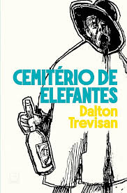

Cemitério de Elefantes

Sobre a obra
“O livro que consolidou Dalton Trevisan como um dos maiores autores do Brasil retorna com nova capa e textos de orelha e quarta capa assinados por César Aira e Marçal Aquino, ilustres figuras da literatura nacional e internacional.
Cemitério de elefantes, publicado originalmente em 1964, é o livro que consolidou Dalton Trevisan como um dos maiores escritores do Brasil. Depois de uma calorosa recepção na estreia, com o livro Novelas nada exemplares, de 1959, crítica e leitores se renderam de vez aos contos minimalistas e ao olhar atento do escritor curitibano. Não por acaso, pois alguns dos melhores momentos do autor estão neste livro. É o caso de “Uma vela para Dario”, que virou um clássico do repertório daltoniano, ao escancarar a crueldade do ser humano em uma situação-limite.
A derrocada do homem, rural e urbano, é retratada em contos poderosíssimos, nos quais Trevisan destila os temas que o consagraram: traição (“A margem do rio”), ciúme (“Caso de desquite”), abuso (“Questão de família”), violência doméstica (“Ao nascer do dia”), patriarcado (“O primo”), prostituição (“Dinorá, moça do prazer”) e ainda todo tipo de sentimento que costuma alimentar a “guerra conjugal”, como tão bem definiu o próprio autor em outro livro célebre. Há ainda, claro, os bêbados da beira do rio, no conto-título, um retrato impiedoso das chagas da metrópole.
Mas esses contos seriam apenas histórias comuns, ouvidas “atrás da porta”, não fosse a genial linguagem criada e lapidada à exaustão pelo autor – quando as elipses falam mais do que páginas e páginas de enredo.
Assim, Cemitério de elefantes se tornou um capítulo importante do imenso romance sobre a vida privada que Dalton Trevisan vem escrevendo há décadas e que cravou definitivamente seu nome entre os maiores autores de nossa literatura. Para o escritor e roteirista Marçal Aquino, que assina o texto de quarta capa desta mais nova edição: “Cemitério de elefantes é a pedra fundamental do monumento literário que Dalton Trevisan construiu nos últimos sessenta anos.”
“Descobri a obra de Dalton em meados dos anos 1970, quando foi publicada na Argentina a tradução de O vampiro de Curitiba. Pouco depois, comecei a viajar ao Brasil, e a comprar seus livros, todos os que encontrava. [...] Se me perguntam qual o meu favorito, poderia mencionar Pão e sangue, no qual seu minimalismo sanguinário foi sublimado. Gosto, porém, de tudo o que ele escreveu, sua velocidade, sua prosa nonsense, antídoto contra tanto barroquismo inútil, sua desconfiança em relação ao matrimônio e seu amor à humanidade.” – César Aira”
Dados da edição
- Editora
- Record
- ISBN
- 978-850-192-117-8
- Páginas
- 112
- Lançamento da edição
- 10/06/2024
Fonte
As informações foram copiadas e coladas do site da editora: Editora Record.